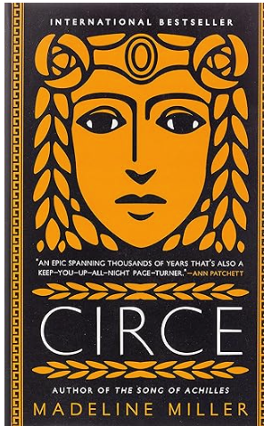
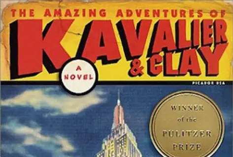

Reading great books does more than entertain — it opens doors. The right story can make you think, challenging your ideas and expanding your understanding of the world. Books can transport you to distant places and different eras, offering a chance to explore lives far from your own. They introduce you to unique, unforgettable characters whose journeys stay with you long after you close the cover. And through their struggles, hopes, and perspectives, stories help us build empathy, connecting us to experiences we may never encounter in everyday life. Here are some of our favorites.
Circe (Madeline Miller, 2018)

“Monsters are a boon for gods. Imagine all the prayers.” So says Circe, a sly, petulant, and finally commanding voice that narrates the entirety of Miller’s dazzling second novel. The writer returns to Homer, the wellspring that led her to an Orange Prize for The Song of Achilles (2012). This time, she dips into The Odyssey for the legend of Circe, a nymph who turns Odysseus’ crew of men into pigs. Readers will relish following the puzzle of this unpromising daughter of the sun god Helios. It takes banishment to the island Aeaea for Circe to sense her calling as a sorceress: “I stepped into those woods and my life began.” This lonely, scorned figure learns herbs and potions, surrounds herself with lions, and, in a heart-stopping chapter, outwits the monster Scylla to propel Daedalus and his boat to safety. She makes lovers of Hermes and then two mortal men. Circe’s fascination with mortals becomes the book’s marrow and delivers its thrilling ending. All the while, the supernatural sits intriguingly alongside “the tonic of ordinary things.”
The Amazing Adventures of Kavalier and Clay (Michael Chabon, 2000)

Czech immigrant Josef Kavalier arrives in Brooklyn in 1939 to stay with his aunt’s family, and sparks are immediately struck between “Joe” (a talented draftsman) and his cousin Sammy Klayman, a hustling go-getter (and hopeful “serious writer”) who dreams of success in the burgeoning new field of newspaper comic strips. The pair dream up, and draw the exploits of, such superheroes as “the Escapist” (a figure resembling “Houdini, but mixed with Robin Hood and a little bit of Albert Schweitzer,” whose sources are revealed in extensive flashbacks that also detail Joe’s training as a magician and escape artist)—and “Kavalier & Clay” become rich and famous. But the shadow of Hitler, and later the pressure of change and political accusation, overtake these two magnificently imagined characters. The story climaxes unforgettably—and surprisingly—atop the Empire State Building, and its lengthy dénouement (a virtuoso piece of sustained storytelling) ends in a gratifying resolution of the deceptions and disappearances that have become second nature (as well as heavy burdens) to Joe, and a simultaneous “unmasking” and liberation that release Sammy from the storybook world they had made together.
At the dawn of the 1960s, Elizabeth Zott finds herself in an unexpected position. She's the star of a television program called Supper at Six that has taken American housewives by storm, but it's certainly not what the crass station head envisions: “ 'Meaningful?' Phil snapped. 'What are you? Amish? As for nutritious: no. You’re killing the show before it even gets started.’” Elizabeth is a chemist, recently forced to leave the lab where she was doing important research due to an out-of-wedlock pregnancy. Now she's reduced to explaining things like when to put the steak in the pan. If ever a woman was capable of running her own life, it's Elizabeth. But because it's the 1950s, then the '60s, men have their sweaty paws all over both her successes and failures. On the plus side, there's Calvin Evans, world-famous chemist, love of her life, and father of her child; also Walter Pine, her friend who works in television; and a journalist who at least tries to do the right thing. This is the kind of book that has a long-buried secret at a corrupt orphanage with a mysterious benefactor as well as an extremely intelligent dog named Six-Thirty. Garmus' energetic debut also features an invigorating subplot about rowing.